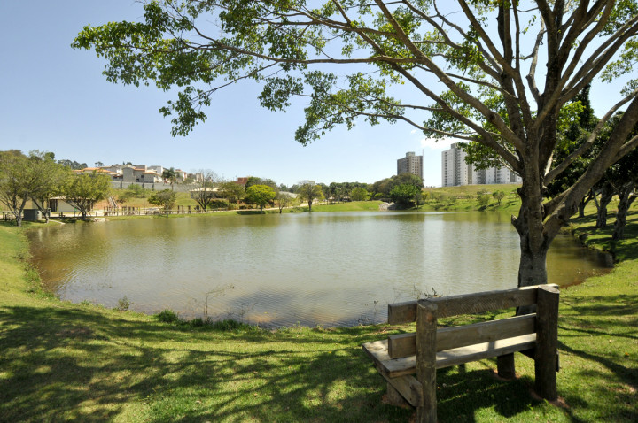

PARQUE DO ENGORDADOURO
Com uma área de lazer de quase 173.000 m², o Parque do Engordadouro “Ângelo Costa” foi construído como contrapartida de empreendimentos imobiliários privados, por meio do Estudo de Impacto de Vizinhança (EIV).
A área do lazer do Engordadouro está adaptada, inclusive, com bebedouros “pets”, para receber os bichinhos por meio do projeto-piloto “Vamos Juntos ao Parque”. Lagos, praias, mirantes, quiosques de sapê, academia ao ar livre, parque infantil, paraciclos, quadras poliesportiva e de areia, além de piso tátil para a acessibilidade de deficientes visuais formam o complexo “Ângelo Costa”.
São ao menos 3,8 mil metros de trilhas em concreto, que inclui pistas de caminhada e ciclovias, além de outros 2 mil metros de trilhas em pedrisco.

- Endereço: Av. André Costa, 1595 – Morada das Vinhas, Jundiaí - SP
- Horário de Funcionamento: Segunda à sexta das 7h às 16h. Sábado, domingo e feriado das 7h às 17h
PARQUE DO ENGORDADOURO
O Parque do Engordadouro está localizado no Endereço: Av. André Costa, 1595 – Morada das Vinhas, Jundiaí - SP.